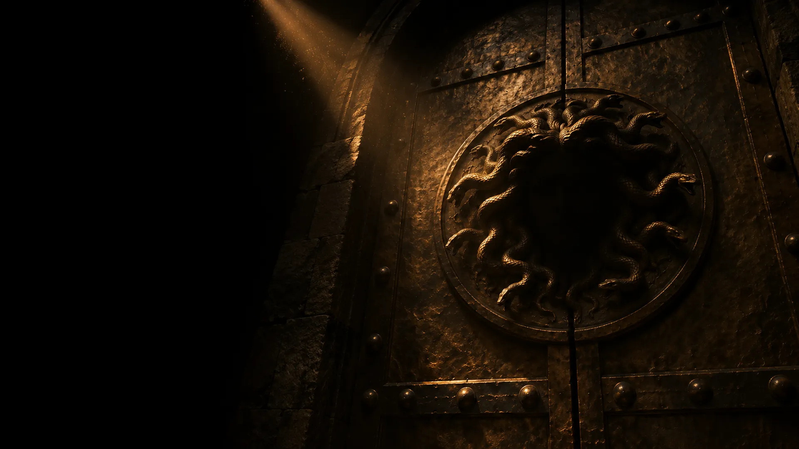

01Schutzzeichen
„Was tötet, wenn man es ansieht, bewacht die Tür.“
Die älteste Deutung ist ganz praktisch: Das Gorgonenhaupt schreckt ab. Auf Athenas Aigis schützt es vor Waffen und jagt Feinden Angst ein.3 Darum sitzt es auf Schilden, Dächern und Toren – das Schreckliche wehrt das Schreckliche ab. Noch die Medici sahen in Caravaggios Medusa ein Sinnbild für Weisheit und Umsicht.4
GegenargumentDer Schutz gilt immer den anderen. Medusa selbst schützt niemand – ihr Kopf ist ein Werkzeug in fremden Händen.
Abb. 20Das Tor mit dem Gorgonenhaupt · KI-generiert